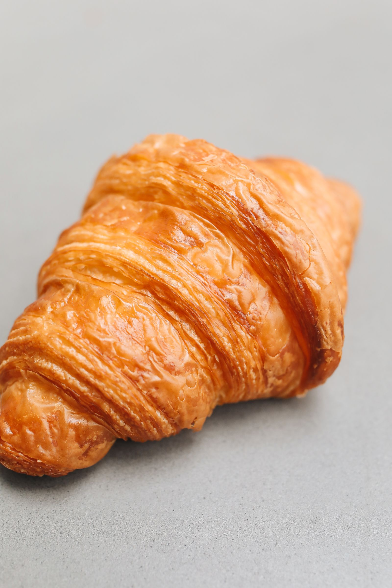

Sfoglia al burro con dodici ore di lievitazione.
Semola rimacinata e pasta madre, mollica gialla e profumata.
Due barrette di fondente dentro una sfoglia friabile.
Alta e soffice, olio extravergine e sale grosso.
Come quello della nonna, al limone e yogurt.
Al finocchietto, croccanti, fatti a mano uno a uno.
